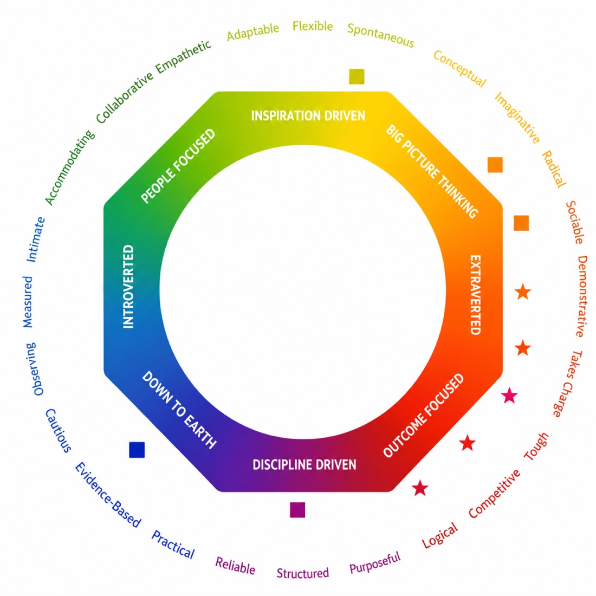

Lumina Spark is a modern, next-generation psychometric tool that avoids the "labeling" or "boxing" common in traditional personality assessments. It focuses on the complexity of human nature by measuring 24 discrete qualities across a continuum, rather than forcing you into a single rigid type.

The Lumina Spark Mandala
At Caroline Dawson International (CDI), we utilize Lumina Spark as our premier tool for Adaptive Leadership. While traditional tools often put people in "boxes," Lumina Spark is designed to reflect the messy, beautiful complexity of a human being.
It is the only professional tool that embraces Paradox — the idea that you can be both a big-picture visionary and a detail-oriented analyst at the same time.
Our workshops focus on the dynamic nature of personality. We move away from static "types" and instead look at your 24 Qualities across three distinct "Personas." This helps participants understand how their behavior shifts depending on who they are with and how much pressure they are under.
By bringing Lumina Spark into your organization through CDI, you move toward a culture of High-Definition Self-Awareness:
The result is a leader who can "flex" between opposites. We teach participants how to hold high Outcome-Oriented (Red) energy to hit targets, while simultaneously utilizing People-Oriented (Yellow) energy to keep the team motivated.
Teams learn to "speed read" the color energies of their colleagues. The result is a dramatic decrease in friction; instead of reacting to a "difficult" personality, team members learn to adapt their energy to match the needs of the situation.
Because we map the Overextended Persona, the result is a workforce that can self-regulate. Individuals learn to spot their "triggers" early, allowing them to return to their effective "Everyday" persona before a professional relationship is damaged.
We provide a Team Mandala that maps everyone's energies in one visual space. The result is a clear understanding of the team's collective strengths and "missing links," allowing for more strategic project delegation.
A flexible, high-impact delivery designed to fit your team's calendar and goals.
Half-day or full-day training workshop.
Live facilitated session, delivered onsite or virtually.
Workshop content and delivery can be tailored to meet your organisation's goals and audience profile.
Interactive Team Splash activities and visual mandala exercises, with expertly guided debriefs for collective understanding.
Organizations choose Caroline Dawson International (CDI) for Lumina Spark because we specialize in high-performance cultures where complexity is an asset, not a hurdle. We move beyond "boxing" people into types, instead celebrating the full spectrum of your team's personality.
Most tools force a choice between opposing traits. Our experts use Lumina Spark to show how your team members can be both competitive and collaborative, or disciplined and imaginative, providing a more accurate and respectful view of human nature.
We don't just look at how people act in a workshop. Our experts dive deep into the Underlying, Everyday, and Over-extended personas. This helps leaders understand why their behavior shifts under pressure and how to stay effective during high-stakes projects.
Lumina Spark is grounded in Big Five research but delivered through a modern, interactive lens. Our experts translate this sophisticated data into a vibrant, visual language that is intuitive and easy for global teams to adopt.
A unique strength of our delivery is identifying the "shadow" side of strengths. We help teams recognize when a positive trait (like being "results-oriented") becomes a liability under stress, providing practical strategies to "dial back" and regain balance.
Instead of static charts, our experts provide highly visual "Team Splashes." This allows your group to see their collective energy in real-time, making it immediately obvious where the team is balanced and where it needs to recruit or develop specific qualities.
Lumina Spark is a modern psychometric tool that avoids "boxing" people into rigid types. It uses a "both/and" approach, acknowledging that you can possess seemingly opposite traits (like being both Introverted and Extroverted). Our experts use this to provide a highly nuanced, "whole-person" view of your personality.
A half-day session (4 hours) introduces the Lumina Splash and focuses on your "Everyday" persona and communication style. A full-day session (8 hours) dives deeper into the Three Personas, specifically exploring your "Over-extended" behaviors and how to manage stress and blind spots within a team.
Our experts typically recommend 12 to 40 participants for an interactive experience. This allows for effective "Team Splashing," where the collective personality of the group is visualized, helping members understand the team's shared strengths and gaps.
Yes. We frequently deliver onsite sessions to ensure maximum convenience for your organization. Our experts bring all the necessary digital and physical materials; we simply require a space with audio-visual capabilities (projector and screen) to display the dynamic team data.
Absolutely. We specialize in bespoke in-house runs tailored to your specific organizational challenges, such as leadership transitions or cultural shifts. Share your preferred dates and team size, and our experts will design a customized workshop centered on your unique "Team Splash."
Talk to our facilitators about scoping a Lumina Spark workshop for your leadership team — or download our free e-book to communication breakdowns first.